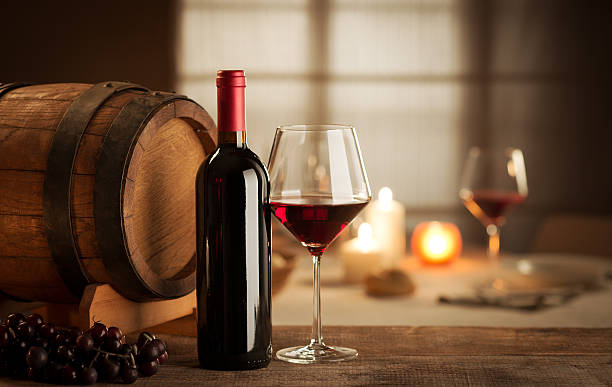
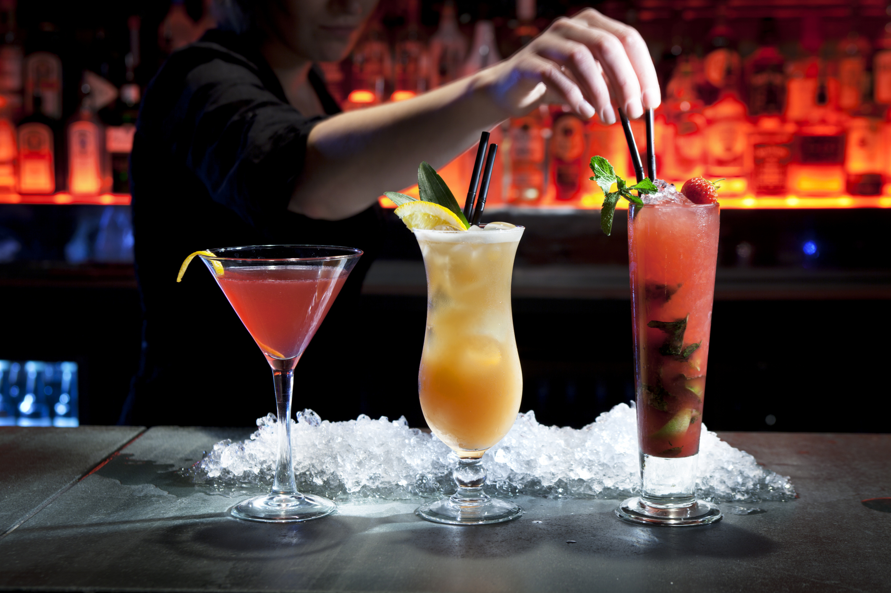
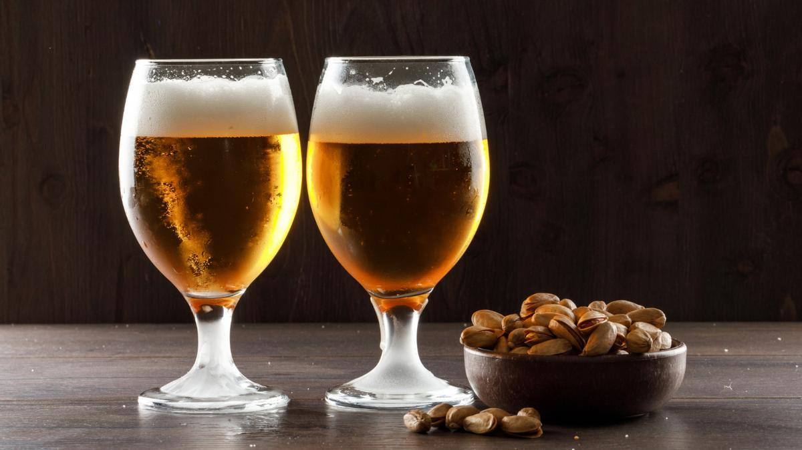

Bebidas



Bebidas con Alcohol
- Vinos
- Vino Tinto
- Chianti Classico
- Barolo
- Montepulciano d'Abruzzo
- Nero d'Avola
- Vino Blanco
- Pinot Grigio
- Vermentino
- Soave
- Gavi di Gavi
- Vino Rosado
- Rosato di Toscana
- Bardolino Chiaretto
- Vino Espumoso
- Prosecco
- Franciacorta
- Asti Spumante
- Cócteles
- Aperol Spritz: Aperol, prosecco y soda, adornado con una rodaja de naranja.
- Negroni: Gin, Campari y vermouth rojo, servido con hielo y una rodaja de naranja.
- Bellini: Prosecco y puré de durazno.
- Limoncello Spritz: Limoncello, prosecco y soda.
- Licores y Digestivos
- Limoncello: Licor de limón.
- Amaro: Licor de hierbas, ideal como digestivo.
- Grappa: Aguardiente italiano.
- Sambuca: Licor de anís, servido con granos de café.
- Cervezas
- Golden
- Porter
- Scottish
- Ipa
- Soda Italiana: Variedad de sabores como limón, naranja y granadina.
- Refrescos Clásicos: Coca-Cola, Fanta, Sprite.
- Agua Mineral: Con o sin gas.
- Jugos Naturales
- Zumo de Naranja Fresca
- Zumo de Manzana
- Zumo de Uva
- Zumo de Limón
- Cócteles sin Alcohol
- San Pellegrino Mojito: Limonada de San Pellegrino con hojas de menta fresca.
- Spritz Sin Alcohol: Mezcla de soda de naranja, agua con gas y una rodaja de naranja.
- Bellini Sin Alcohol: Puré de durazno con soda